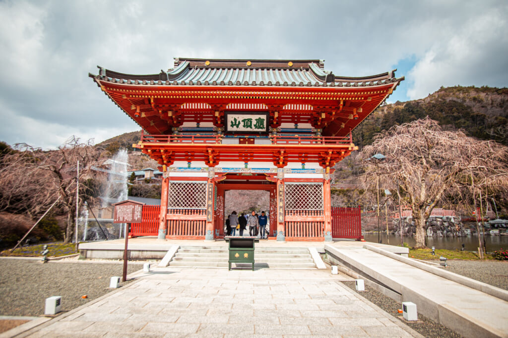
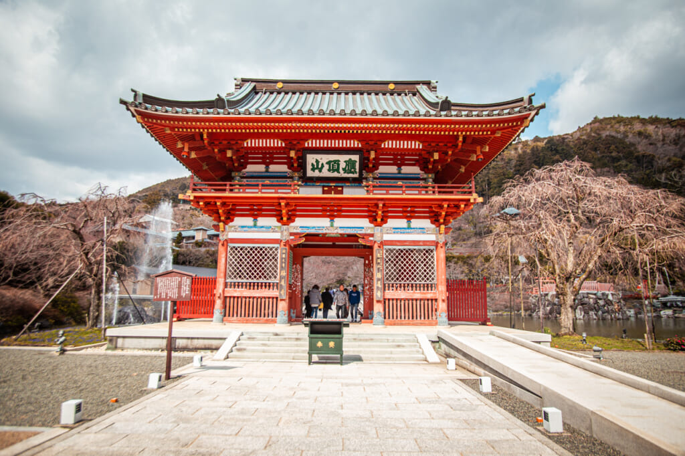
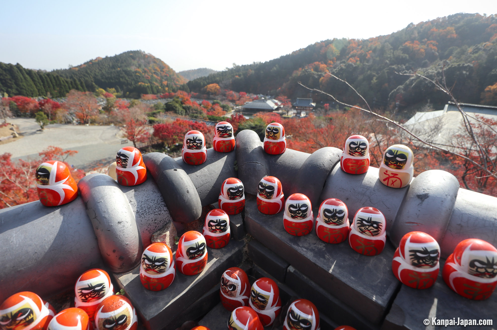
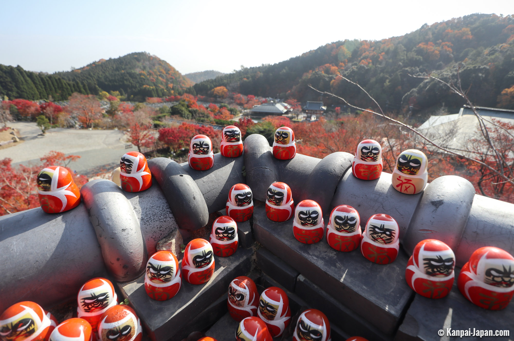

El templo Katsuo-ji (勝尾寺) es un espectacular templo budista situado en las montañas al norte de la ciudad de Osaka. Es conocido como «el templo de los daruma de Osaka» porque todo el complejo del Katsuo-ji está repleto de amuletos daruma. El templo ofrece una vistas maravillosas en cualquier época del año, aunque es especialmente popular en otoño, cuando el momiji o cambio de color de las hojas adquiere una mezcla de tonos espectacular. Además, forma parte de la ruta de peregrinación Saigoku Kannon, hermanada con el Camino de Santiago español y que recorre parte de las regiones de Kansai y Chubu. Si lo visitas en otoño, te recomendamos llegar lo más pronto posible, para ver el templo antes de que lleguen los autocares llenos de turistas. Si ya conoces lo más típico y céntrico, puede ser una buena excursión alternativa como parte de una ruta de 3 días por Osaka.
.jpg) 

Según la leyenda, en 727 dos monjes gemelos llamados Zenchu y Zensan construyeron una pequeña cabaña en el lugar que hoy ocupa el templo Katsuo-ji. Aquí, en plena montaña, comenzaron a realizar prácticas religiosas ascetas, por lo que este año se considera la fecha de fundación del templo. Unos años más tarde, Myokan, una sacerdotisa budista considerada la encarnación de Kannon (la deidad budista de la misericordia), talló una estatua de 2,8 metros de la Kannon de las once caras y mil manos, que se convirtió en la imagen principal del templo. Asimismo, en la misma época, el emperador Seiwa recuperó su salud gracias a oraciones realizadas en el templo, supuestamente.
 

Según la historia del templo, el emperador dijo que «el poder del dharma de este templo me ha ganado a mí, el rey (emperador) que gobierna este país». De ahí surgió el nombre del templo Katsuo-ji, escrito en esa época con los caracteres de «ganar», «rey» y «templo» (勝王寺, Katsuo-ji). No obstante, las autoridades del templo pensaron que el nombre podía dar lugar a equívocos, porque podía entenderse que el templo era capaz de «ganar al rey». Por esa razón, se cambió el segundo kanji al actual 尾 (cola), que tiene la misma pronunciación. Entonces el nombre del templo pasó a escribirse como 勝尾寺, aunque manteniendo la pronunciación, Katsuo-ji. En 1188, tras varios incendios y guerras que habían destruido el templo, Minamoto Yoritomo ordenó su reconstrucción. Posteriormente, varios edificios del templo fueron reconstruidos en el periodo Edo, tras haber vuelto a ser destruidos.